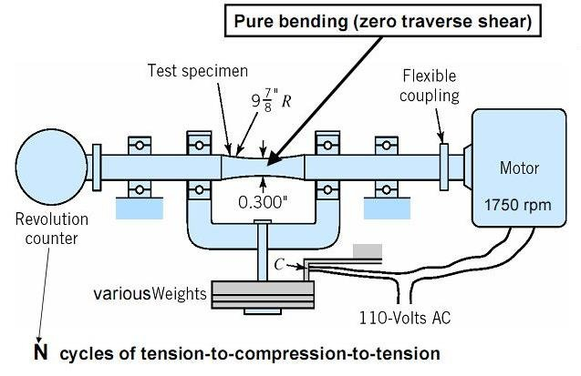

The tensile test is a test performed to know the ductility of the particular material. In practical, the test is carried out on Universal Testing Machine (also called as UTM). When tension is applied to a particular member, the stresses are developed in the member at the center. At a particular point of time during the testing, the member breaks which is called as yield point. Youngs Modulus: Youngs modulus is defined as the ratio of stress to strain. It is denoted by E. Tensile stress is the stress state caused by an applied load that tends to elongate the material in the axis of the applied load, in other words the stress caused by pulling the material. The strength of structures of equal cross sectional area loaded in tension is independent of cross section geometry. Materials loaded in tension are susceptible to stress concentrations such as material defects or abrupt changes in geometry. However, materials exhibiting ductile behavior (metals for example) can tolerate some defects while brittle materials (such as ceramics) can fail well below their ultimate stress. Strain: Strain is defined as the ratio of deformed length to the original length.
